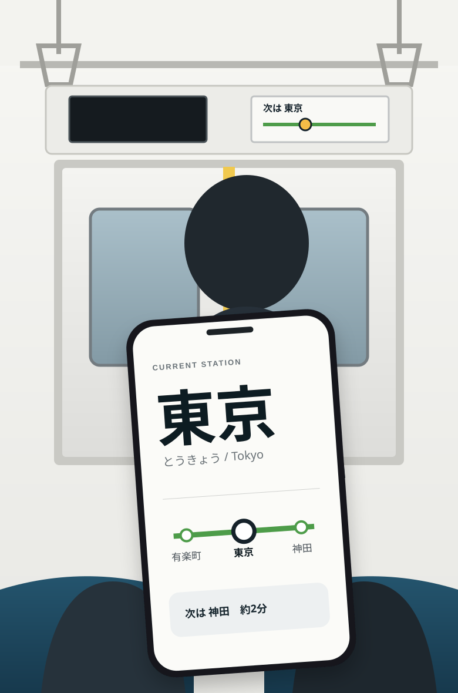

席に座ると、扉上の表示が見えない
立っている人や座る位置で、現在駅の表示が視界から外れる。
「今どこ？」と思うのは、たいてい短い瞬間。だから、確認までの操作も短くしました。
立っている人や座る位置で、現在駅の表示が視界から外れる。

イヤホンや会話中でも、手元を見れば現在駅を確認できます。

知りたいのは経路ではなく、ただ「今の駅」だけ。
エキココの中心は現在駅表示です。必要な情報だけを、その場で読み取りやすい順番に並べています。
駅名・路線・距離を、短時間で確認しやすい構成に整理します。
駅名を特大表示。膝上や手元で一瞬見る使い方を想定しています。
降りる駅を設定して、到着前に気づきやすくします。
IC・QR・きっぷ・乗り換えなどの補助情報へすぐアクセスできます。

情報を減らし、駅名を主役にした確認専用画面。混雑時でも、スマートフォンに視線を落とすだけで現在地が分かります。
ブラウザまたはホーム画面からエキココを起動します。
現在地から近い駅を判定するため、位置情報を利用します。
現在駅が大きく表示されます。必要なときだけ目的地を設定します。